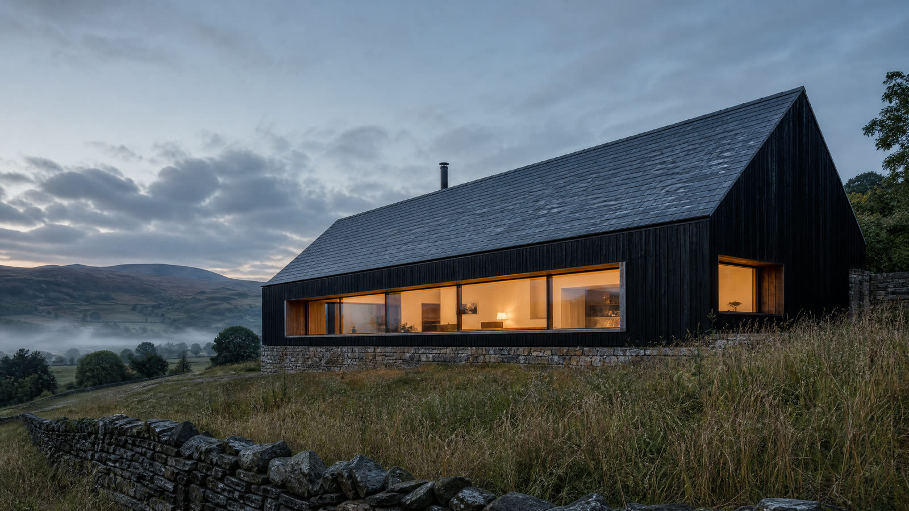
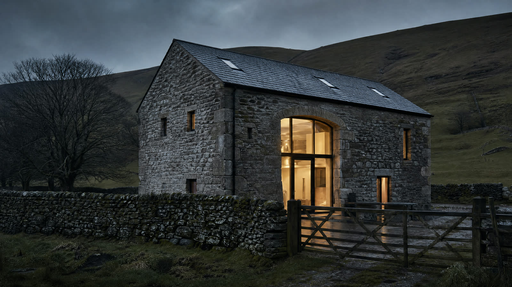
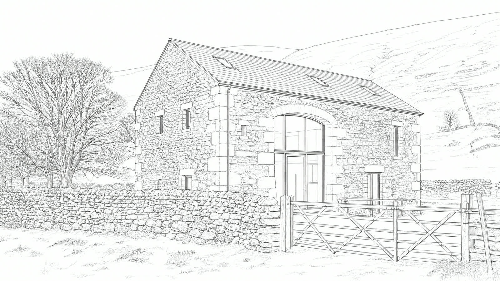

Architecture studio · Lancaster & the North West
Houses for
the fells.
01 · The studio
Extensions, new homes and conversions across the North West. A small studio, careful drawings, and the same people from the first sketch to the last site visit.
- 12years designing homes Sample
- 140+homes drawn Sample
- 3people in the studio Sample
02 · Selected work
Five homes.
Project images are illustrative. They are not photographs of built projects.



03 · Drawn first
Drawn first.
Built right.
- 01 · The landWe start with the site.Levels, light, views and what the planners will allow.
- 02 · The drawingThen we draw every line.Plans, sections and details your builder can price.
- 03 · The buildingSo it gets built right.Lune Barn, a stone barn becoming a family home. Sample
- 01
Extensions
Rear, side and wraparound extensions that bring light into the middle of the house.
- 02
New homes
One-off houses on tricky, sloping or rural plots.
- 03
Conversions
Barns, chapels and outbuildings turned into homes, keeping what makes them special.
- 04
Interiors
Reworking the inside of a house so it suits the way you live now.
Free first consultation
Start with
a chat.
Thirty minutes, no charge. Tell us what you're thinking and we'll tell you honestly what's possible. Sample